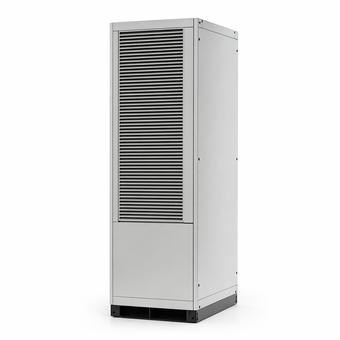

CRAC vs. CRAH: What Is the Difference?
Both stand in the same place and blow cold air at the same racks. One makes its own cooling with a compressor; the other borrows it from a chiller plant. Nearly every other difference follows from that.

Key takeaways
- A CRAC (computer room air conditioner) contains a compressor and a refrigerant circuit. A CRAH (computer room air handler) contains only a chilled water coil, fans and a control valve.
- A CRAC is self-contained, so each unit fails alone. A CRAH depends on a chiller plant, so the redundancy has to be built into the plant and the piping.
- Chilled water with CRAHs is usually the more efficient choice at scale; CRACs suit small rooms and sites with no chiller plant.
- Either is sized on sensible cooling in tons or kW at a stated return air temperature, and the rating falls as the return air gets cooler.
On this page · 7 sections
The one-line answer
A CRAC makes cold with its own compressor; a CRAH uses chilled water made somewhere else. A CRAC, or computer room air conditioner, is a complete refrigeration machine in a cabinet: compressor, evaporator coil, expansion valve and fans. A CRAH, or computer room air handler, is much simpler. It is a coil with chilled water running through it, a set of fans to push room air across the coil, and a valve to control the water flow.
From the aisle they look alike and do the same job, which is why the two names are used loosely. The difference is where the refrigeration happens, and that decides how the system is powered, how it fails and how far it scales.
How each one rejects heat
Heat taken out of the room has to leave the building, and the two types do it differently.
A CRAC uses direct expansion, usually shortened to DX. Refrigerant evaporates in the indoor coil, absorbing heat from the air, and is compressed and sent to a condenser. In the common air-cooled arrangement that condenser sits outdoors, joined to the indoor unit by refrigerant pipes. In a glycol-cooled or water-cooled CRAC the condenser is inside the cabinet and a pumped loop carries the heat to a dry cooler or a cooling tower.
A CRAH has no refrigerant circuit of its own. Chilled water arrives from a central plant, typically somewhere between 44 and 60°F depending on the design, picks up heat in the coil and returns warmer. The chillers that cool it reject their heat either directly to the air, in an air-cooled chiller, or through condenser water to a cooling tower.
| CRAC | CRAH |
|---|---|
| Source of cooling | |
| Compressor and refrigerant in the unit | Chilled water from a central plant |
| Main electrical load in the unit | |
| Compressors and fans | Fans only |
| What it depends on | |
| Its own condenser or dry cooler | Chillers, pumps and the piping between |
| Capacity control | |
| Compressor staging or variable speed | Water valve and fan speed |
| Typical home | |
| Small and medium rooms, sites with no chiller plant | Large facilities built around a chiller plant |
Efficiency and scale
At small scale a CRAC is hard to beat. There is no plant to build, capacity is added one unit at a time, and a room of a few hundred kilowatts can be cooled by a handful of units with their condensers on the roof.
As the load grows, chilled water pulls ahead. Large chillers are more efficient than many small compressors, a central plant can use economizers to cool the water with outside air for much of the year, and water carries heat in far less space than refrigerant lines or air ducts. A CRAH also has only fans to run, and with variable speed fans their power falls with the cube of speed. That relationship is worked through in the affinity laws guide.
The boundary is not fixed. Pumped-refrigerant economizers have made modern DX systems much more efficient than older ones, and they avoid bringing water into the building at all, which some operators prefer on principle.
Redundancy and failure
This is where the two differ most in practice. A CRAC is independent. If one fails, the others carry on, and N+1 means simply one more unit than the load needs.
A CRAH is only as available as the water behind it. A room full of healthy air handlers cools nothing if the chilled water stops, so the redundancy has to reach back through the pumps, the chillers and the pipework, often with two separate loops or a ring main with isolation valves. Concurrent maintainability, the ability to take any one component out of service without losing cooling, is a piping design problem more than an equipment one. The levels are described in N+1 vs. 2N redundancy.
The two also behave differently when power is lost. CRAH fans draw little enough to be kept on a UPS, and a chilled water system with a storage tank can go on cooling for the minutes it takes generators to start and chillers to restart. Compressors are rarely put on a UPS, so a room cooled by CRACs has no active cooling until the generators are carrying them. At high rack densities the room temperature rises quickly in that gap, which is one reason dense rooms lean toward chilled water or liquid cooling.
Sizing either one
Both are rated on sensible cooling capacity, the part that lowers air temperature. IT equipment gives off dry heat, so a data center load is almost entirely sensible, and units for this duty are designed to do very little dehumidifying. A comfort air conditioner of the same nominal tonnage delivers noticeably less sensible cooling.
The arithmetic starts from the IT load. Take a 200 kW room:
200 kW × 3,412 = 682,400 BTU/h, and 682,400 / 12,000 = 56.9 tons
With units of 30 tons sensible each, two carry the load and a third gives N+1. The BTU to tons converter does the conversion, and the airflow calculator gives the air those units must move: at a 20°F rise, about 158 CFM for each kW.
One caution governs the whole selection. A unit's capacity is quoted at a stated return air temperature, and it falls as the return air gets cooler. A CRAH rated for 30 tons with 95°F return air may deliver well under that if cold supply air is allowed to mix with the return and bring it down to 75°F. That is the practical case for containment: it is what gets the rated capacity out of the equipment.
Common mistakes
- Using the names interchangeably on a specification. One needs refrigerant piping and condensers, the other needs a chilled water plant. They are not substitutes.
- Counting air handlers and forgetting the plant. N+1 CRAHs on a single chilled water loop with one pump is not N+1 cooling.
- Sizing on total capacity. The figure that matters is sensible capacity at the return air temperature the room will actually run at.
- Ignoring the electrical side. A CRAC's compressors are a large motor load in the room, with starting current to match. A CRAH moves that load out to the chiller plant.
- Assuming cooling resumes the moment the generators start. Compressors and chillers have restart delays, and the room goes on heating through them.
Frequently asked questions
What does CRAC stand for, and what does CRAH stand for?
CRAC is computer room air conditioner: a self-contained unit with its own compressor and refrigerant circuit. CRAH is computer room air handler: a unit with a chilled water coil and fans, which relies on a separate chiller plant for cooling.
Is a CRAH more efficient than a CRAC?
Usually, in a large facility. A CRAH runs only fans, and the central chillers that serve it are more efficient than many small compressors and can use economizers for much of the year. In a small room the plant is not worth building and a CRAC is the sensible choice. Modern DX units with pumped-refrigerant economizers have narrowed the gap.
Does a CRAH need a chiller?
Yes. A CRAH has no means of making cold. It needs a supply of chilled water, which comes from one or more chillers, with pumps and piping to deliver it. That whole plant has to be as redundant as the cooling is meant to be.
How many CRAC or CRAH units does a room need?
Convert the IT load to tons of sensible cooling by multiplying kW by 3,412 and dividing by 12,000, divide by the sensible capacity of one unit at the expected return air temperature, round up, and add units for redundancy. A 200 kW room is about 57 tons, so three 30-ton units give N+1.
Next steps
The equipment itself is covered on the data center cooling reference page, and where air cooling runs out is the subject of liquid vs. air cooling.
Run the numbers
- BTU to Tons ConverterIT load in kW to tons of cooling.
- Airflow (CFM) CalculatorThe air a heat load needs at a given temperature rise.
- Chilled Water Flow CalculatorGPM from tons and the water temperature difference.
Cite or link to this guide
Free to quote with attribution. Suggested citation: Voltfield Editorial Team, “CRAC vs. CRAH: What Is the Difference?” Voltfield, updated November 11, 2026. https://voltfield.org/guide-crac-vs-crah.html
Get new guides by email
One short email when a new guide or calculator is published, at most once a month. Your address is used for nothing else.